Welcome to Assam
Explore the serene landscapes, cultural diversity, and historical richness of Assam.
Major Cities & Tourist Attractions
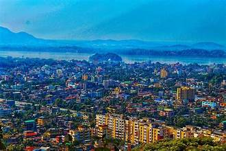
Guwahati – The gateway to Northeast India, known for Kamakhya Temple and Assam State Museum.
Majuli – The world's largest river island, famous for its vibrant culture and Vaishnavite monasteries.
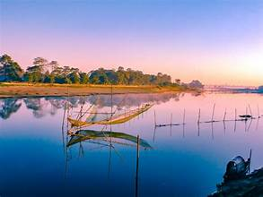
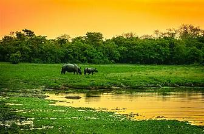
Kaziranga National Park – UNESCO World Heritage Site and home to the majestic one-horned rhinoceros.
Jorhat – Known for its lush tea gardens and the historic Gibbon Wildlife Sanctuary.
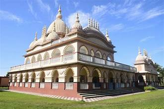

Sivasagar – A historical town with Ahom dynasty monuments like Rang Ghar and Talatal Ghar.
Tezpur – Known for its scenic beauty and ancient temples like Agnigarh.

Rivers, Hills & Natural Beauty
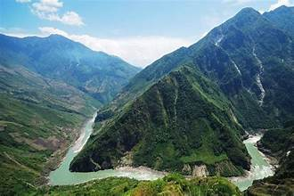
Brahmaputra River – The lifeline of Assam, offering picturesque landscapes and river cruises.
Manas National Park – A UNESCO World Heritage Site with rich biodiversity and dense forests.
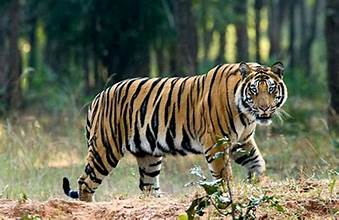
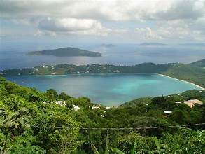
Haflong – The only hill station in Assam, known for its serene landscapes and cool climate.
Kakochang Waterfalls – A breathtaking waterfall located near Kaziranga.
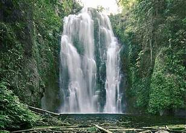
Temples, Monasteries & Religious Sites
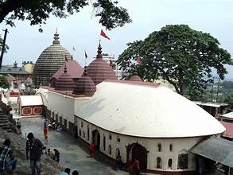
Kamakhya Temple – A revered Hindu temple dedicated to Goddess Kamakhya in Guwahati.
Umananda Temple – A temple dedicated to Lord Shiva located on Peacock Island in the Brahmaputra River.


Satras of Majuli – Vaishnavite monasteries preserving Assam’s cultural heritage and traditions.
Hajo – A unique pilgrimage site that houses temples of Hindus, Buddhists, and Muslims.
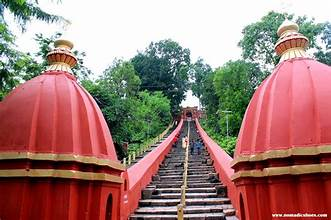
Historical Monuments & Heritage

Rang Ghar – An ancient amphitheater used for Ahom entertainment and royal sports.
Kareng Ghar – The palace of the Ahom kings located in Sivasagar.
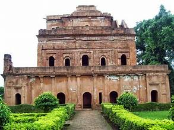

Talatal Ghar – A magnificent seven-storied palace reflecting Ahom architectural brilliance.
Agnigarh – A historical site associated with the love story of Usha and Aniruddha.
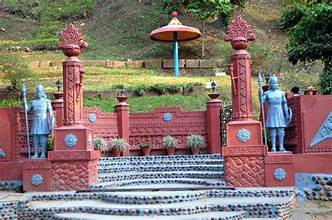